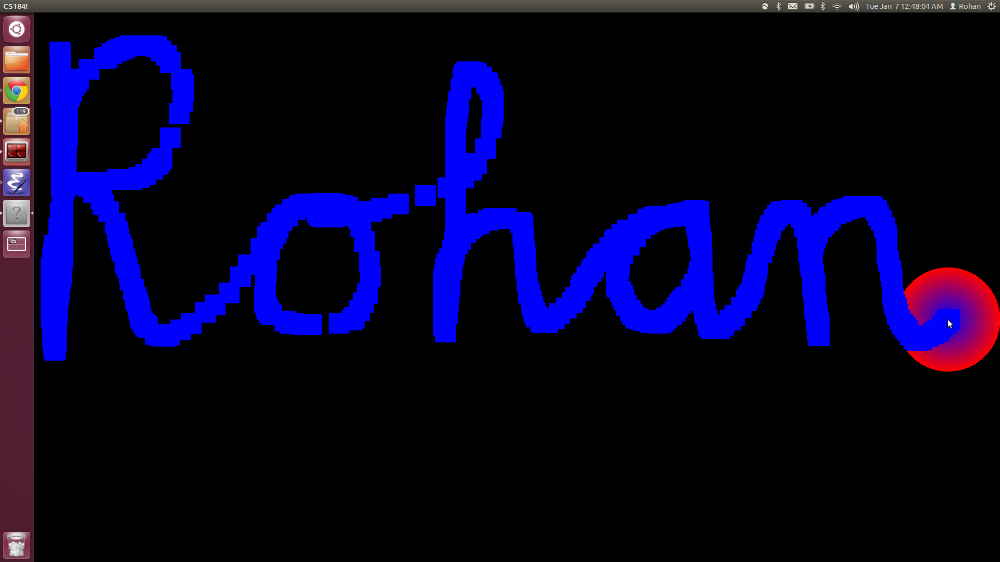

When you run the executable, you can drag the mouse around the screen to create your own images from the squares that form where the wheel is! Click the mouse button to clear the screen. Notice also that the pretty wheel is animated! Here's a screenshot and video:
 Youtube Video